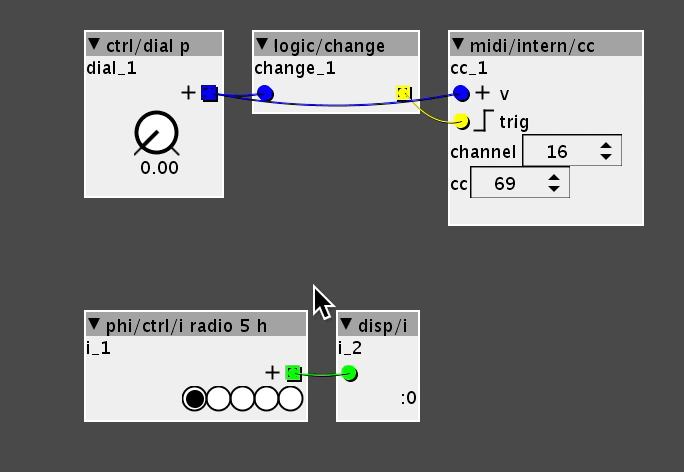

Hi everyone, I would need some help handling the following task:
in my patch I inserted a 5-position selector to change the waveform of an lfo, the selector has associated a #CC in order to be managed via MIDI.
now the fun part: I would like to use a 5-position hardware selector (7pin) to be able to select the waveforms of the aforementioned lfo, what is the best solution to this task in your opinion?
Thanks so much
5 position selector to change lfo waveform
KF78
#1
tele_player
#2
Two simple solutions come to mind:
- use 5 digital inputs to determine the location of the selector.
- use a voltage divider so the switch has 5 different output voltages, and use one analog input
janvantomme
#3
I think a voltage divider + a single analog input might be the best option if you want to connect more things to the GPIO your axoloti.
This circuit diagram from ElectricDruid will be useful (https://electricdruid.net/product/vclfo-10/):
Just add in an extra 10K resistor and connect to 3.3V instead of 5V.
 Really helpful
Really helpful{kind=link}
KF78
#5
Hi @janvantomme, I tried with the scheme that you suggest but probably something went wrong, when I turn the selector the position in radio5 jumps from 1 to 5 instantly.
Question: about the voltage divider, is it a module on axo or an electrical component?
janvantomme
#8
Don't know. Do you have some detailed photos of what you've built + maybe the axoloti patch you are using?
KF78
#9
hi, here's two pics of the circuit and a screenshot of the patch:
{kind=link}
{kind=link}
the red cable goes to the vdda, the black to the gnd, and the blue to the analog port PA5
{kind=link}
here the radio 5h is mapped to CC69 on MIDI channel 16
thank you in advance
tele_player
#10
First things I’d try:
Check switch voltages with a multimeter.
Use a display object to see what the analog port is reading.
Maybe I’m missing something, but I don’t see how the switch affects the radio button.
Suggestion, you can also upload your patch easily, so somebody else can try it without having to copy from a screen shot.
janvantomme
#11
This is not working because you are not scaling the incoming signal correctly. Gif below shows why.
The ctrl/dial p object has the same range as the gpio/in/analog object. When I turn this dial with the up/down arrows on my keyboard, you'll notice that this is moving the radio buttons, but I'm only able to use the range of 0.0 to 2.0 on the dial. If you want to use the full range of the dial, you'll need to scale the incoming signal so it outputs the values you need.
Using internal midi is also not necessary. You can scale the incoming signal and patch it directly into the mux.

Patch below works with the ctrl/dial p object, but may not necessarily work with your analog input, since those values may not be correct voltages due to resistor tolerances.
{kind=link}
KF78
#12
Thank you @janvantomme, always clear and on piece  I understand what you say, you’re right (I didn’t think could be it
I understand what you say, you’re right (I didn’t think could be it  ) I tried with a midi controller for a behavior preview and it works very well, in the next days I’ll try with the DIY UI hoping everything works correctly. I’ll keep you in touch
) I tried with a midi controller for a behavior preview and it works very well, in the next days I’ll try with the DIY UI hoping everything works correctly. I’ll keep you in touch